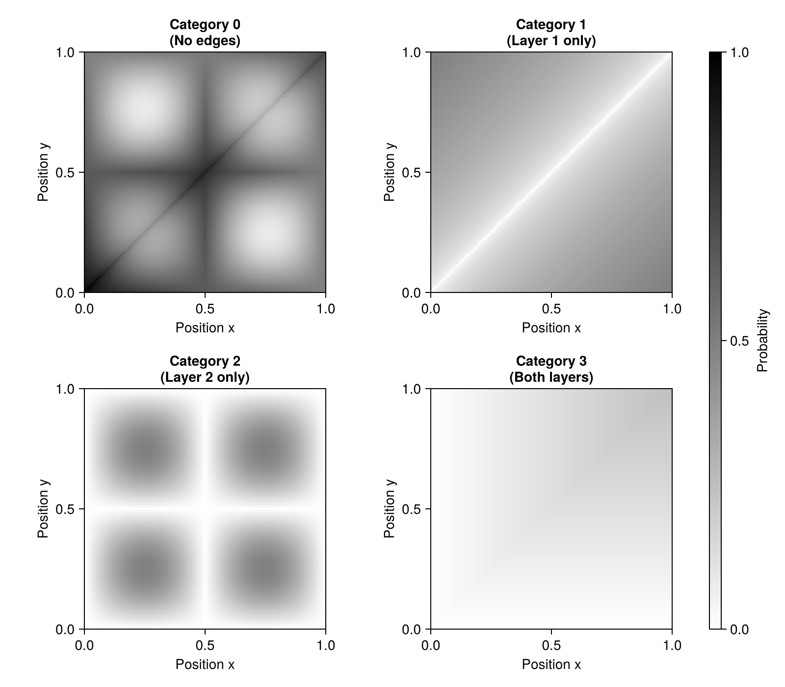
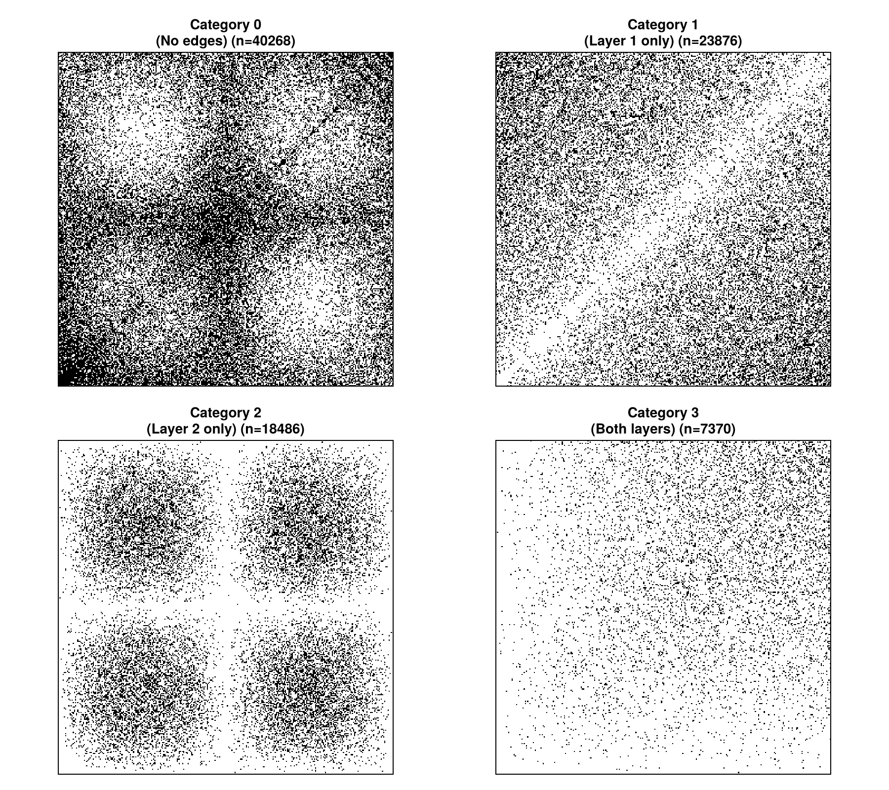
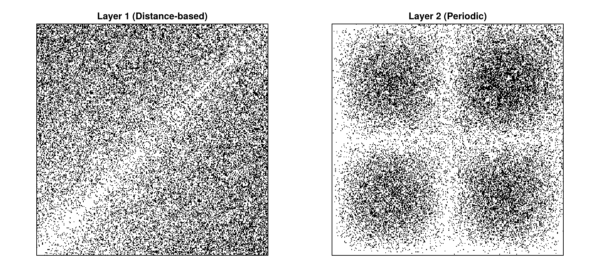
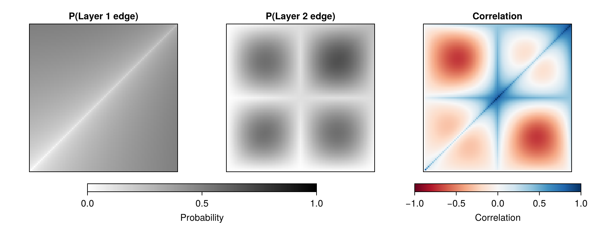

Multiplex Networks with Decorated Graphons
In this tutorial, we'll learn how to model multiplex networks (graphs with multiple types of edges or layers) using decorated graphons. This is a powerful extension that goes beyond simple binary graphs.
We'll build a 2-layer network where:
- Each edge can exist on layer 1, layer 2, both layers, or neither
- The probabilities depend on the latent positions of nodes
- We can analyze correlations between layers
Motivation: Why Decorated Graphons?
Real-world networks often have multiple types of relationships:
- Social networks: friendships, professional connections, family ties
- Brain networks: anatomical connections, functional correlations
- Transportation: roads, railways, air routes
A decorated graphon returns not just edge probabilities, but entire distributions over edge types or weights. This lets us model rich, structured networks.
Setup
Load the packages we'll need:
using Random
using Distributions
using StaticArrays
using Graphons
using CairoMakie
Random.seed!(42)TaskLocalRNG()Understanding the Four-Category Model
For a 2-layer multiplex network, each pair of nodes (i,j) can be in one of four categories:
| Category | Binary | Layer 1 | Layer 2 | Interpretation |
|---|---|---|---|---|
| 0 | 00 | No | No | No connection |
| 1 | 10 | Yes | No | Only layer 1 |
| 2 | 01 | No | Yes | Only layer 2 |
| 3 | 11 | Yes | Yes | Both layers |
Instead of returning a single edge probability, our graphon will return a discrete probability distribution over these 4 categories.
Defining a Decorated Graphon
Let's create a graphon function that returns interesting structure. The function will assign probabilities to each of the four categories:
- Category 1 (layer 1 only): Probability increases with distance between x and y
- Category 2 (layer 2 only): Periodic pattern based on position synchronization
- Category 3 (both layers): Probability increases when both x and y are similar and high
- Category 0 (no edge): Whatever probability remains
Here's the implementation:
function W_multiplex(x, y)
ps = zeros(4)
ps[2] = sqrt(abs(x - y)) / 2 # layer 1 only
ps[3] = abs(sin(2π * x) * sin(2π * y)) / 2 # layer 2 only
ps[4] = min(x, y) / 4 # both layers
ps[1] = 1 - sum(ps[2:4]) # no edge
return DiscreteNonParametric(0:3, SVector{4}(ps))
endW_multiplex (generic function with 1 method)Create the decorated graphon:
graphon_multiplex = DecoratedGraphon(W_multiplex)DecoratedGraphon{Int64, Matrix{Int64}, typeof(Main.W_multiplex), Distributions.DiscreteNonParametric{Int64, Float64, UnitRange{Int64}, StaticArraysCore.SVector{4, Float64}}}(Main.W_multiplex)Let's check what it returns:
@show dist = graphon_multiplex(0.3, 0.7)
@show probs(dist) # Probabilities for categories 0, 1, 2, 3dist = graphon_multiplex(0.3, 0.7) = Distributions.DiscreteNonParametric{Int64, Float64, UnitRange{Int64}, StaticArraysCore.SVector{4, Float64}}(support=0:3, p=[0.15651798538942518, 0.31622776601683794, 0.45225424859373686, 0.075])
probs(dist) = [0.15651798538942518, 0.31622776601683794, 0.45225424859373686, 0.075]Visualizing Category Probabilities
Let's visualize how the probability of each category varies across the latent space [0,1]²:
fig = Figure(size = (800, 700))
labels = [
"Category 0\n(No edges)",
"Category 1\n(Layer 1 only)",
"Category 2\n(Layer 2 only)",
"Category 3\n(Both layers)",
]
for i = 1:4
row = (i - 1) ÷ 2 + 1
col = (i - 1) % 2 + 1
ax = Axis(
fig[row, col],
title = labels[i],
xlabel = "Position x",
ylabel = "Position y",
aspect = 1,
)
hm = heatmap!(ax, graphon_multiplex, k = i, colormap = :binary, colorrange = (0, 1))
end
Colorbar(fig[:, 3], colormap = :binary, colorrange = (0, 1), label = "Probability")
fig
Interpretation:
- Top-left: Most pairs have no edges (high p₀₀)
- Top-right: Layer 1 edges increase with distance (p₁₀)
- Bottom-left: Layer 2 has periodic structure (p₀₁)
- Bottom-right: Both layers appear for similar, high-position nodes (p₁₁)
Sampling a Multiplex Network
Now let's sample an actual network with 300 nodes:
n = 300
A_categories = sample_graph(graphon_multiplex, n)
println("Matrix type: ", typeof(A_categories))
println("Matrix size: ", size(A_categories))
println("Categories present: ", unique(A_categories))Matrix type: Matrix{Int64}
Matrix size: (300, 300)
Categories present: [0, 1, 2, 3]The matrix contains category labels (0, 1, 2, 3) for each edge pair.
Visualizing the Category Structure
Let's see how the categories are distributed in the sampled network:
fig = Figure(size = (900, 800))
for (idx, (cat, label)) in enumerate(zip(0:3, labels))
row = (idx - 1) ÷ 2 + 1
col = (idx - 1) % 2 + 1
ax = Axis(
fig[row, col],
title = label * " (n=$(count(==(cat), A_categories)))",
aspect = 1,
)
hidedecorations!(ax)
A_binary = zeros(Bool, n, n)
A_binary[A_categories .== cat] .= true
heatmap!(ax, A_binary, colormap = :binary)
end
fig
Notice how each category creates a different pattern!
Extracting Individual Layers
For analysis, we often want separate adjacency matrices for each layer:
A_layer1 = zeros(Bool, n, n)
A_layer1[A_categories .∈ Ref([1, 3])] .= true # Layer 1: present in categories 1 and 3
A_layer2 = zeros(Bool, n, n)
A_layer2[A_categories .∈ Ref([2, 3])] .= true # Layer 2: present in categories 2 and 3
println("Layer 1 density: ", sum(A_layer1) / (n^2) * 100, "%")
println("Layer 2 density: ", sum(A_layer2) / (n^2) * 100, "%")
println("Overlap (both layers): ", sum(A_layer1 .& A_layer2) / (n^2) * 100, "%")Layer 1 density: 34.717777777777776%
Layer 2 density: 28.728888888888886%
Overlap (both layers): 8.188888888888888%Visualize the two layers:
fig = Figure(size = (900, 400))
ax1 = Axis(fig[1, 1], title = "Layer 1 (Distance-based)", aspect = 1)
ax2 = Axis(fig[1, 2], title = "Layer 2 (Periodic)", aspect = 1)
hidedecorations!(ax1)
hidedecorations!(ax2)
heatmap!(ax1, A_layer1, colormap = :binary)
heatmap!(ax2, A_layer2, colormap = :binary)
fig
Advanced: Analyzing Marginals and Correlations
We can go beyond categories and think about the marginal probabilities for each layer and their correlation.
For this, we'll use the MVBernoulli package to convert category probabilities into a multivariate Bernoulli distribution. The category probabilities [p00, p10, p01, p11] map to a joint probability table for two binary variables:
using MVBernoulli
function W_mvbernoulli(x, y)
cat_probs = probs(W_multiplex(x, y))
return MVBernoulli.from_tabulation([cat_probs...])
end
graphon_mvb = DecoratedGraphon(W_mvbernoulli)DecoratedGraphon{StaticArraysCore.SizedVector{2, Bool, TData} where TData<:AbstractVector{Bool}, Matrix{StaticArraysCore.SizedVector{2, Bool, TData} where TData<:AbstractVector{Bool}}, typeof(Main.W_mvbernoulli), MVBernoulli.MultivariateBernoulli{Float64}}(Main.W_mvbernoulli)Now we can compute marginal probabilities and correlation:
# Create a grid to evaluate the graphon
grid_size = 101
x_range = range(0, 1, length = grid_size)
# Marginal probability that layer 1 has an edge
p1 = [marginals(graphon_mvb(x, y))[1] for x in x_range, y in x_range]
# Marginal probability that layer 2 has an edge
p2 = [marginals(graphon_mvb(x, y))[2] for x in x_range, y in x_range]
# Correlation between layers
corr = [correlation_matrix(graphon_mvb(x, y))[1, 2] for x in x_range, y in x_range]
# Visualize:
fig = Figure(size = (900, 350))
ax1 = Axis(fig[1, 1], title = "P(Layer 1 edge)", aspect = 1)
ax2 = Axis(fig[1, 2], title = "P(Layer 2 edge)", aspect = 1)
ax3 = Axis(fig[1, 3], title = "Correlation", aspect = 1)
hidedecorations!.([ax1, ax2, ax3])
hm1 = heatmap!(ax1, p1, colormap = :binary, colorrange = (0, 1))
hm2 = heatmap!(ax2, p2, colormap = :binary, colorrange = (0, 1))
hm3 = heatmap!(ax3, corr, colormap = :RdBu, colorrange = (-1, 1))
Colorbar(
fig[2, 1:2],
hm1,
vertical = false,
label = "Probability",
width = Relative(0.6),
flipaxis = false,
)
Colorbar(
fig[2, 3],
hm3,
vertical = false,
label = "Correlation",
width = Relative(0.9),
flipaxis = false,
)
fig
Interpretation:
- Left: Layer 1 has higher density in the top-right (high positions)
- Middle: Layer 2 has periodic structure with multiple dense regions
- Right: Positive correlation (red) where both layers are active, negative correlation (blue) where they anti-correlate
Creating Block Models for Multiplex Networks
Just like simple graphons, we can discretize decorated graphons into block models for computational efficiency:
sbm_multiplex = discretized_graphon(graphon_mvb, 10)
println("Block model type: ", typeof(sbm_multiplex))
println("Number of blocks: ", length(sbm_multiplex.size))
# Sample from the block model:
A_sbm = sample_graph(sbm_multiplex, 200);Block model type: DecoratedSBM{MVBernoulli.MultivariateBernoulli{Float64}, Matrix{StaticArraysCore.SizedVector{2, Bool, TData} where TData<:AbstractVector{Bool}}, Matrix{MVBernoulli.MultivariateBernoulli{Float64}}, Vector{Float64}, Vector{Float64}}
Number of blocks: 10Key Takeaways
- Decorated graphons return distributions instead of probabilities
- Multiplex networks can be modeled with discrete distributions over edge categories
- Category probabilities can encode complex layer interactions
- We can analyze marginal probabilities and correlations between layers
- All the same tools work:
rand,sample_graph,discretized_graphon - The
MVBernoullipackage helps analyze correlations in binary multiplex networks
Extensions
Decorated graphons can model many other structures:
- Weighted networks: Use continuous distributions (Normal, Exponential, etc.)
- Signed networks: Positive and negative edges with distributions
- Temporal networks: Edge timing distributions
- Attributed graphs: Node or edge features from distributions
The flexibility of decorated graphons makes them a powerful tool for complex network modeling!
This page was generated using Literate.jl.